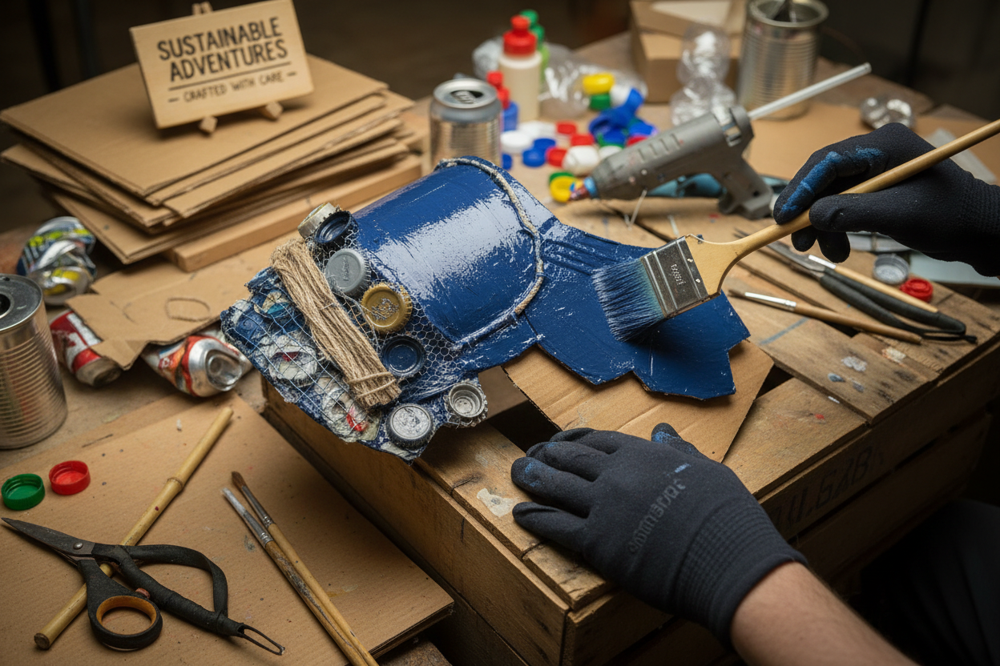
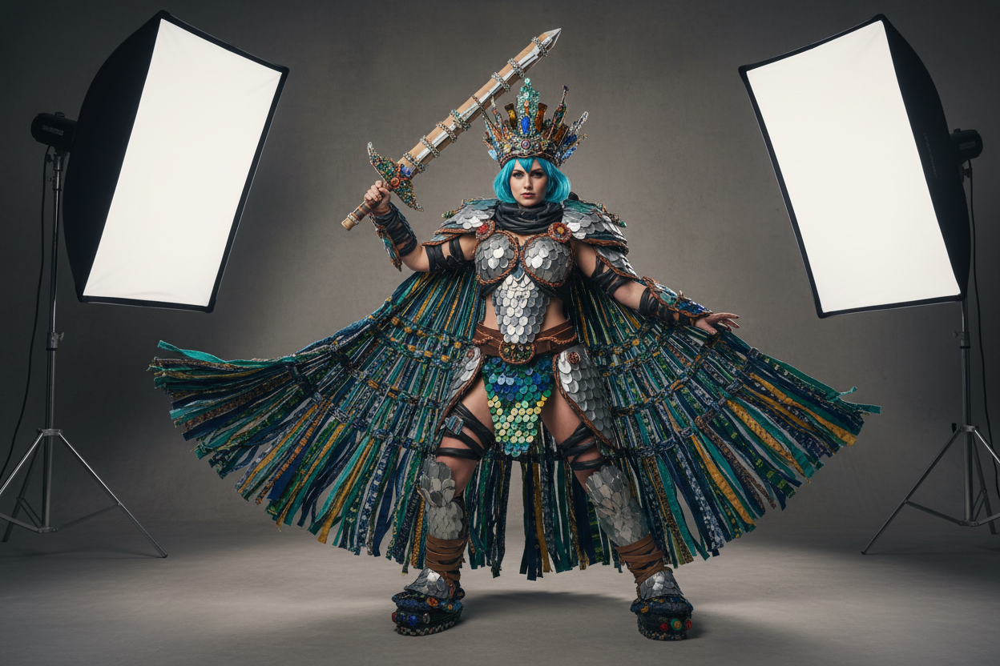

Il cosplay sostenibile è una tendenza in crescita nella community italiana. Scopri come creare costumi straordinari riducendo l'impatto ambientale.
La Rivoluzione Verde
Il cosplay sostenibile non è solo una questione etica: è anche una sfida creativa stimolante. Trovare il modo di trasformare materiali di scarto in elementi di costume richiede ingegno.

I materiali riciclabili più utili sono spesso quelli che buttiamo ogni giorno. Le bottiglie di plastica possono essere modellate in forme sorprendenti.
Il Risultato Finale
Non lasciarti ingannare dall'origine dei materiali: un costume "eco" può essere altrettanto spettacolare di uno tradizionale.

Questa cultura dello scambio e del riciclo promuove un modello di consumo più consapevole all'interno della community.